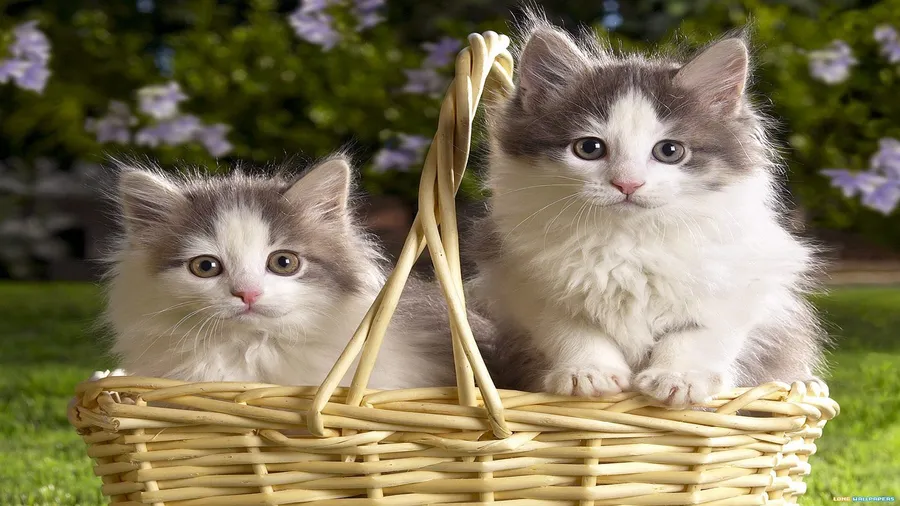
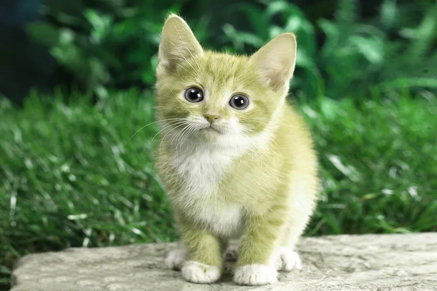
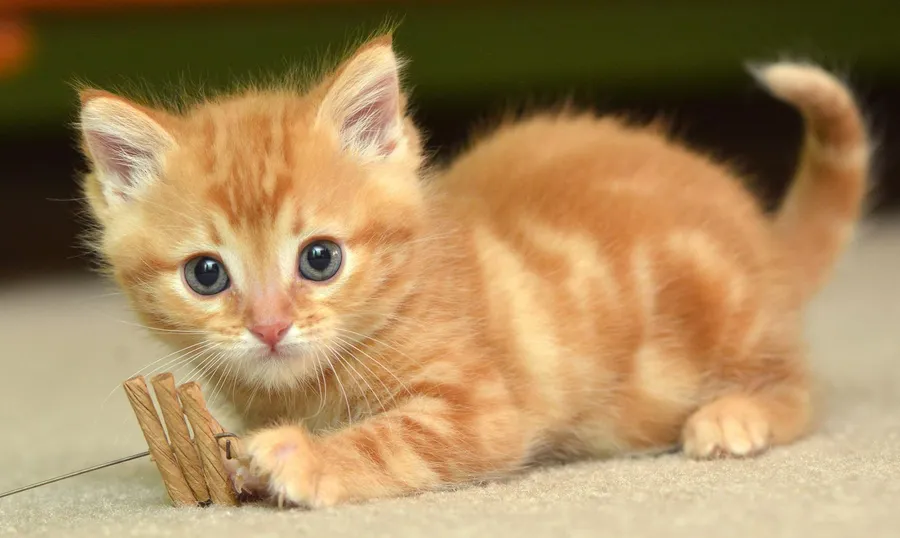

The 115th annual Cat Fancy Event is beign held in New
York City on December 21st. This is the Fanciest Cat Event of the Year, starring over 300 different cat..
This Event wash make a show America how great part really are.
There will be treats at the walk in, and for the Cat
owners there will be a buffet in the lounge. We thank
you for coming to our event site, and hope to see you on December 21st. Thank You.

featured cats
George C.
Sam F.
Doug T.
Sally Z.


These cats will be the showrunners this year. George has a long history in cats events,
and is looking forward to this year's Cat Fancy Event. Sam is aworld class runner, and will be showing his new techniques.
Doug likes to lay around, and will practice his abilities. Sally was invited because her mom made a fit about not coming.